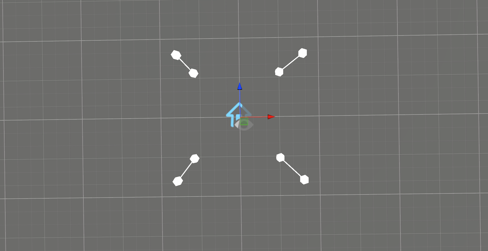
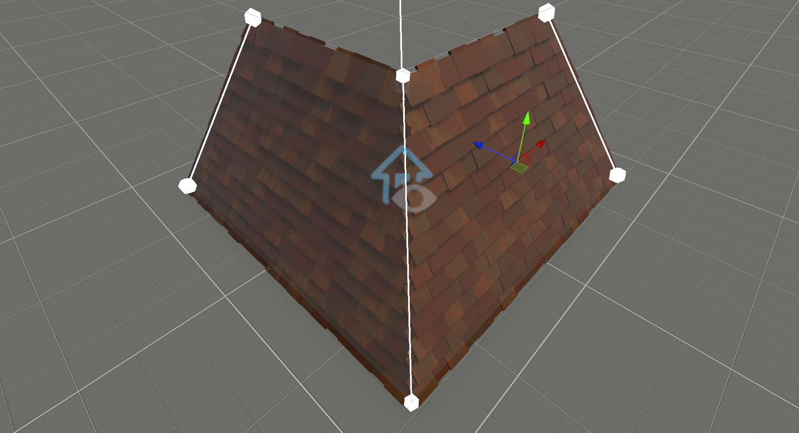

My First Roof
This tutorial explains how to set up components for procedurally generating a roof. To avoid duplicating steps from the previous tutorial My First Wall, this tutorial omits details about geometry setup.
For the completed tutorial, refer to the scene My First Roof in Samples.
Geometry Setup
First, set up the geometry by constructing roof-like lines.
Next, add planes.
Important
Ensure that plane gizmos are rendering correctly so you can verify the planes are facing the right direction. To invert a plane's direction, select the Cozy Plane and use the Invert button in the Cozy Toolbar.
Tiles
Now we move to the exciting part—generating tiles from the planes.
- Create a new GameObject with the
Cozy Gridcomponent and make it a child of yourPlaneGameObject. - Add the following components:
Cozy GridCozy Double Lap TilingCozy Draw
- For the
Cozy Drawcomponent:- Enable Global Rotation.
- Set Cell Size to
0.2, 0.16, 0.2.
Once set up, duplicate this tile GameObject for all four planes.
Corners
Tile intersections at corners often do not look clean. To fix this, you can create specialized tiling for corners.
- Select the
Cozy Splinefor the corner. - Create a new GameObject with the
Cozy Segmentscomponent and make it a child of theSplineGameObject. - Add the
Cozy Drawcomponent to the new GameObject. - Select the prefab from
Models/Roof/Tile Cornerand set Cell Size to0.2, 0.77, 0.7.